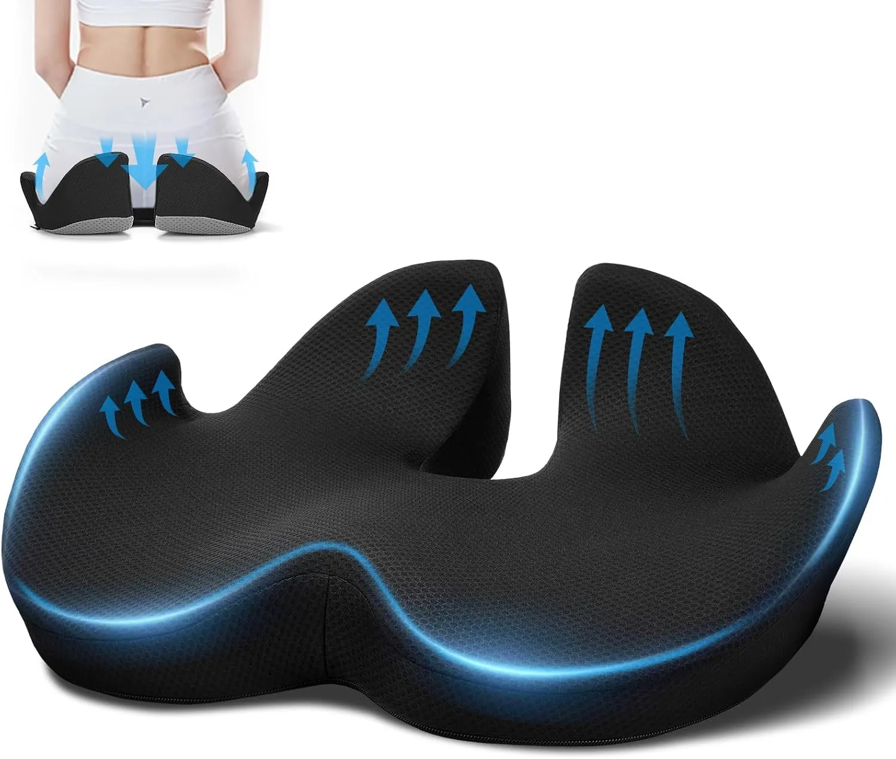
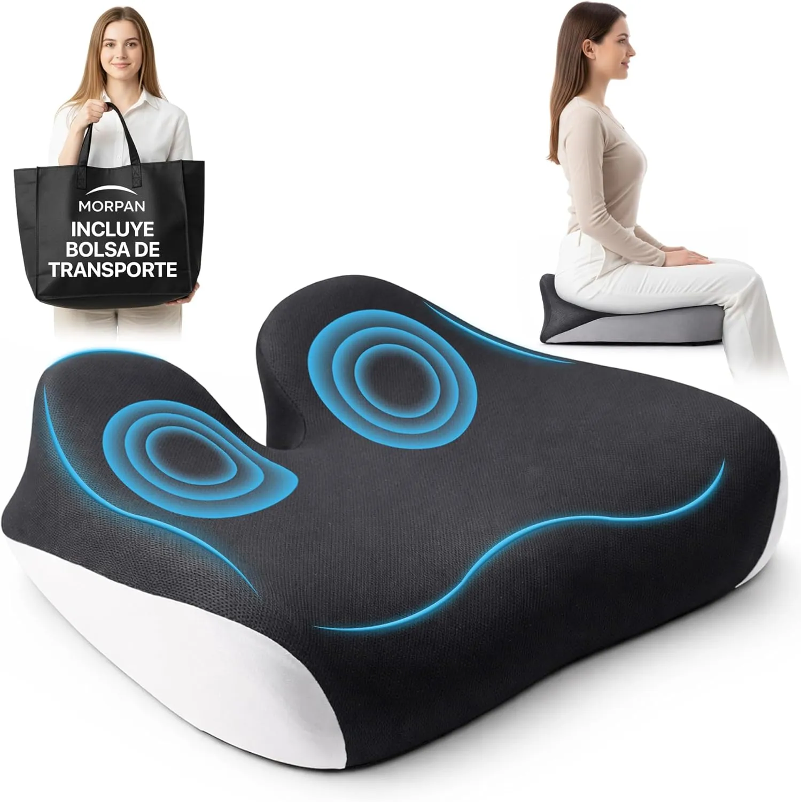
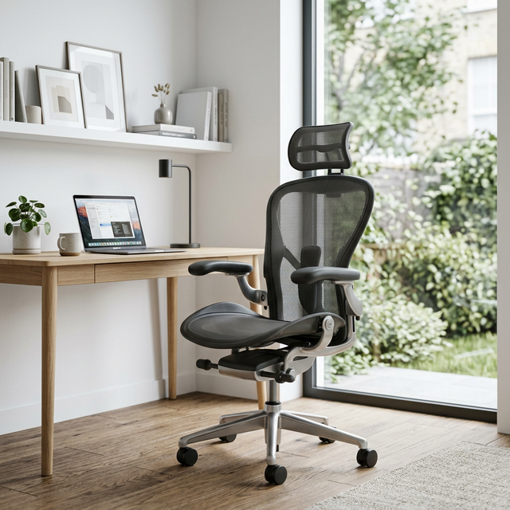
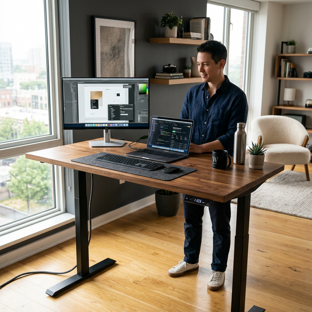

Filtramos el ruido
Partimos de productos con buena base de opiniones, atributos claros y sentido real para un setup ergonómico.
Escritorios elevables, sillas ergonómicas, cojines coxis y brazos de monitor. Comparativas reales y guías prácticas para que trabajes cómodo desde casa, sin gastar de más.
Explorar el catálogo →Escribe una necesidad, un producto o una molestia y te llevamos a la sección más útil del sitio.
Top de modelos para aliviar presión en coxis, ciática y jornadas largas sentado.
ComparativaComparativa rápida para elegir una silla cómoda, ajustable y apta para teletrabajo.
ComparativaOpciones para alternar postura, reducir sedentarismo y montar un setup más sano.
ComparativaEncuentra el soporte ideal para subir pantalla, liberar mesa y cuidar el cuello.
Guía de compraModelos y criterios útiles para mejorar apoyo lumbar y postura al sentarte.
GuíaLos ajustes que realmente importan para no pagar de más ni quedarte corto.
GuíaChecklist clara para acertar con motor, rango de altura y estabilidad.
GuíaAprende a revisar VESA, peso, alcance y tipo de brazo antes de comprar.
ProblemaMedidas prácticas para identificar la causa del dolor y mejorar tu puesto.
HerramientaAjusta alturas y medidas de tu puesto para trabajar con mejor alineación.
No he encontrado una coincidencia exacta. Prueba con “silla”, “cojín”, “lumbar” o “teletrabajo”.
Ver todas las guíasLa base de una postura correcta y sin dolor durante tu jornada.
Trabaja de pie o sentado, cuida tu circulación y metabolismo.
Alivio inmediato para largas horas de asiento o ciática.
Alinea tu vista y dile adiós al estrés cervical diario.
Refuerza el apoyo de la zona baja de tu silla de oficina.
Artículos y consejos expertos para acertar con cada decisión.
No queremos parecer un marketplace infinito. Preferimos filtrar, comparar y actualizar lo que de verdad puede mejorar tu postura en teletrabajo.
Partimos de productos con buena base de opiniones, atributos claros y sentido real para un setup ergonómico.
No solo miramos precio: priorizamos ajuste, postura, compatibilidad y el problema concreto que quieres resolver.
Refrescamos precios, bloques relacionados y páginas clave para que la web siga siendo útil cuando vuelves.
| Modelo | Material | Ideal para | Valoración | |
|---|---|---|---|---|
🏆 #1 Mejor Valorado
Feagar Cojín Coxis
|
Espuma Memoria 100% | Silla Oficina / Coche | ⭐⭐⭐⭐⭐ (4.5) | Ver Oferta |
|
🥈 #2 Calidad/Precio  Cojín Ergonómico Universal
|
Gel + Memoria | Jornadas Largas | ⭐⭐⭐⭐☆ (4.3) | Ver Oferta |
|
🥉 #3 Premium  Fortem Silla Oficina
|
Viscoelástica Premium | Postura Correcta | ⭐⭐⭐⭐☆ (4.4) | Ver Oferta |
Los más vendidos y mejor valorados de cada sección este mes.

37,99 €

48,99 €

49,99 €
Una entrada rápida a los problemas, productos y herramientas que más sentido tienen ahora mismo dentro del nicho.
Guía práctica para detectar qué parte de tu puesto te está castigando más.
Ver soluciones → HerramientaAjusta alturas clave antes de comprar y evita errores de postura desde el primer día.
Calcular mi setup → ComparativaAlternar sentado y de pie sigue siendo una de las mejoras con más impacto.
Ver ranking → InspiraciónCómo mejorar comodidad y postura sin llenar la mesa de accesorios innecesarios.
Leer guía →Un bloque más abierto para descubrir accesorios complementarios de ergonomía sin salirte del contexto de teletrabajo.


Artículos completos para que elijas con criterio y sin equivocarte.

Los 7 ajustes que determinan si una silla es realmente ergonómica para ti.
Leer guía →
Motor dual, altura mínima, memoria de posiciones... qué importa realmente.
Leer guía →Top 5 modelos comparados: ranking completo con precios, pros y contras.
Leer guía →Consejos expertos para mejorar tu espacio sin gastar de más.
Evita estas trampas comunes que cometen los compradores por primera vez.
Leer artículo →Gas vs fricción, VESA, alcance... todo lo que necesitas saber antes de comprar.
Leer artículo →Checklist práctica: forma, densidad, material y dimensiones según tu caso.
Leer artículo →Pasar muchas horas sentado puede convertirse en una fuente constante de molestias en la zona lumbar, cadera y coxis. En Descanso Inteligente reunimos guías prácticas y comparativas imparciales para ayudarte a elegir mejor: desde escritorios elevables y sillas ergonómicas hasta cojines ortopédicos y brazos de monitor.
Aquí encontrarás análisis orientados a intención de compra, explicaciones claras sobre materiales y características técnicas, y criterios útiles para decidir con lógica. Si trabajas muchas horas desde casa, esta web está pensada para que compares opciones en pocos minutos y tomes una decisión informada.
Como afiliados de Amazon, podemos recibir ingresos por las compras realizadas a través de los enlaces en esta web. Esto no afecta al precio que pagas y nos permite mantener el proyecto.